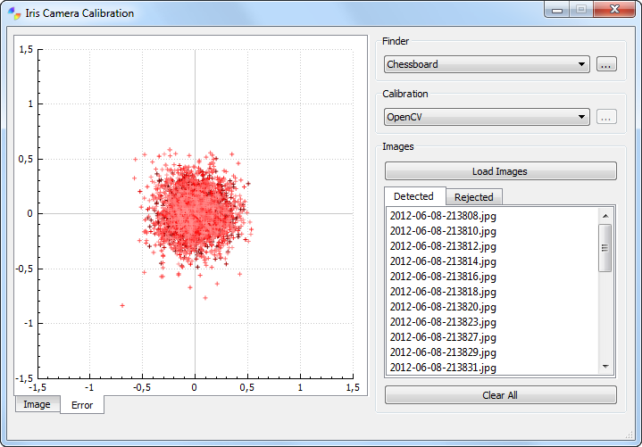

This package offers a flexible cross-platform C++ library for camera calibration and an accompaning GUI application.
License
Iris is available under the GPL/LGPL. The iris library itself is distributed under the LGPL while the UI (IrisCC) is distributed under the GPL.
Installation
Iris uses CMake for its build process, and as such can be used with any of the supported IDEs or commandline toolchains available. A short description follows, of how to install Iris under different platforms.
download Eigen and set the Eigen3_DIR environment variable
download OpenCV and set the OpenCV_DIR environment variable to point to the subdirectory where the file OpenCVConfig.cmake is located (usually under build/ )
if you wish to build the UI app, also download Qt and set the Qt_DIR environment variable
run the CMake GUI and point the directory where Iris is located
choose a directory where Iris should be build to (build directory)
Hit Configure
Choose toolchain and architecture
Hit Generate
if there were no errors, you should find your solution files in the build directory

Acknowledgement
The internal image representation of iris uses the CImg C++ toolkit for image processing.
The plots in the in the Iris GUI app were realized with the Qt plotting widget, a very usefull little piece of software for simple and beautifull plots under Qt.
 Iris
Iris